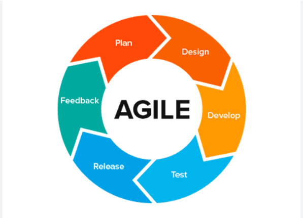

módszertan könyv

Agilis szervezet a gyorsan változó környezetben való rugalmas alkalmazkodásra képes, ezáltal eredményes és fokozott ügyfél-elégedettséget ér el.
Az agilitás egy mindset, egy gondolkodásmód, amely a szervezetek életében több módon is megjelenhet. Az agilis gondolkodás mentén éppen ezért ma már számos agilis módszertan alakult ki: a szervezetnek így lehetősége van kiválasztani, melyik a legmegfelelőbb számára. Sőt ma egyre gyakrabban találkozni hibrid, az adott szervezet igényeire szabott megoldásokkal.
Az agilis módszertan olyan gyakorlatot, munkaszervezést jelent, amely során a szoftverfejlesztés vagy egyéb projekt az agilis értékek mentén iterációkban zajlik. Az egyes iterációk során mind a fejlesztés, mind a tesztelés megvalósul, ezek a tevékenységek tehát párhuzamosak. Folyamatos a kapcsolat a termék felhasználóival, ezért sokkal gyorsabban keletkezik visszacsatolás, valamint fény derül az ügyfelek változó igényeire is. Az egyes iterációk végén a fejlesztés alatt álló termék egy működő darabja, egy működő funkcionalitás készül el.
szoftverfejlesztési módszerek egy csoportja, ahol a szoftverkövetelmények és a megoldások együttműködésen keresztül együtt fejlődnek az önszerveződő és keresztfunkcionális csapatok között. Ez elősegíti az alkalmazkodó tervezést, az evolúciós fejlesztést, korai szállítást, folytonos továbbfejlesztést és bátorít a változásokra adható gyors és rugalmas válaszokra.
hatékony betartása és megvalósítása közös érdek. A gyakorlatban gyakran azt látjuk, hogy a csapatok “beleugranak” a sprintbe, azaz nincs azok előtt megfelelő tervezési, előkészítési folyamat. Az üzleti életben itt is szükség lehet üzleti tervre, termékszintű tervezésre, illetve release meghatározásra. Ennek folyamata nagyon eltérő lehet, az általunk használt és legtöbb esetben bevált folyamatot agilis szimulációnkon tapasztalhatja meg.
